Neste post mostramos como criar visualizações de dados simples usando o pacote {ggplot2} e falamos da importância da visualização de dados na auditoria.
Neste post nosso objetivo é mostrar como utilizar o R para implementar visualização de dados em um contexto auditoria. Para isso vamos utilizar um conjunto de dados apresentado no artigo Data Analytics for Financial Statement Audits de autoria de Trevor R. Stewart, um dos seis artigos que integram o livro Audit Analytics and Continuous Audit: Looking Towards the Future, disponível para download gratuitamente.
O conjunto de dados está no arquivo on_the_go_stores.xlsx e é também utilizado no Capítulo 3 do Guia de Auditoria da AICPA Analytical Procedures onde, por meio de um estudo de caso, ilustra a aplicação de procedimentos analíticos tanto no planejamento quanto na aplicação de testes substantivos.
Vamos ilustrar o exemplo denominado Simple DA Visualization apresentado no artigo em referência com o objetivo de obter uma melhor compreensão do ambiente de negócio da entidade e identificar riscos de erros materiais.
No contexto de auditoria financeira a utilização de visualização de dados tem sido cada vez mais enfatizada como técnica indispensável à adequada implementação dos procedimentos analíticos.
Na literatura mais tradicional de auditoria as técnicas mais comumente citadas para utilização em procedimentos analíticos são: (a) Análise de tendências, (b) Análise de quocientes, (c) Testes de razoabilidade, e (d) Análise de regressão.
Modernamente essas técnicas podem ser ampliadas para incluir também as técnicas que compõem o que se chama de aprendizado de máquina (machine learning)
Os dados dizem respeito a uma cadeia de lojas de conveniência chamada On the Go Stores. A rede possui 23 lojas de conveniência localizadas no sudeste dos Estados Unidos. Uma parte dos dados pode ser vista na figura a seguir:
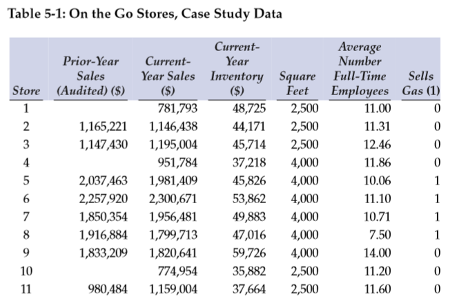
Cinco das vinte e três lojas (lojas 1, 4, 10, 13 e 22) abriram durante o ano. As operações variam em razão da localização geográfica e do mix de produtos vendidos. A localização de uma loja baseia-se em diversos fatores tais como a concorrência e o ambiente econômico da localidade.
De modo geral as operações de uma loja não mudam muito, a não ser que uma nova linha de produtos seja introduzida, como por exemplo a venda de combustível, desconto de cheques ou venda de bilhetes de loteria. O mix de produtos e serviços pode variar e o fator mais importante é se a loja vende combustível. Essas linhas de produtos adicionais em geral afetam o volume de clientes bem como o número de empregados trabalhando em horário integral.
Uso no contexto de conhecimento do négócio
O que vamos fazer é tentar replicar os gráficos apresentados no artigo, um dos quais é reproduzido a seguir:
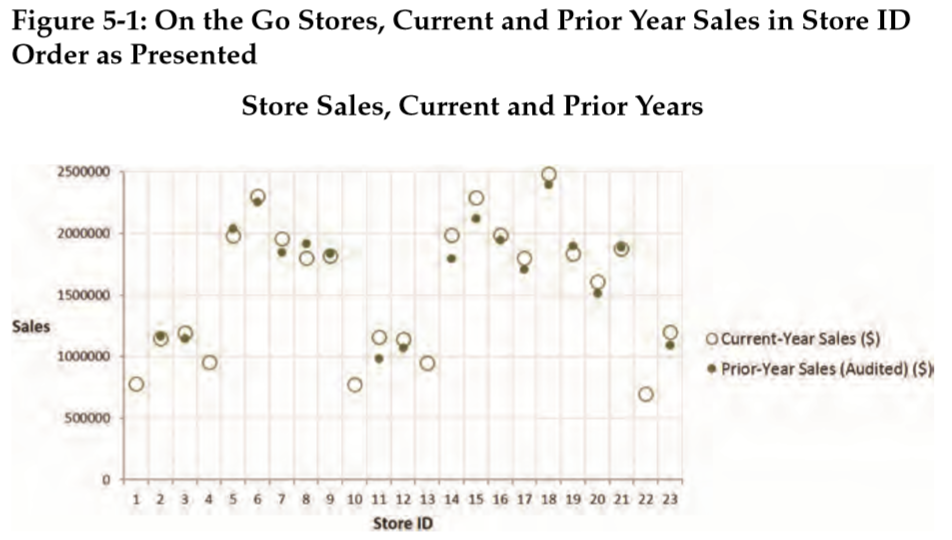
Para tanto vamos utilizar o pacote ggplot2 que integra o tidyverse.
Vamos carregar os pacotes necessários:
Agora vamos importar o conjunto de dados:
stores <- read_excel("on_the_go_stores.xlsx")
head(stores)
# A tibble: 6 x 7
store vendas_ano_anterior_aud vendas_ano_corrente inventario_ano_co~
<dbl> <dbl> <dbl> <dbl>
1 1 NA 781793 48725
2 2 1165221 1146438 44171
3 3 1147430 1195004 45714
4 4 NA 951784 37218
5 5 2037463 1981409 45826
6 6 2257920 2300671 53862
# ... with 3 more variables: area_deposito <dbl>,
# qtd_media_empregados <dbl>, vende_gasolina <dbl>Para a reprodução do gráfico, será necessário realizar uma pequena modificação no conjunto de dados. Essa modificação consiste em transformar as colunas vendas_ano_anterior_aud e vendas_ano_corrente em uma única variável que chamaremos periodo_vendas. Para isso, vamos utilizar a função pivot_longer() do pacote tidyr.
stores_long <- stores %>%
pivot_longer(cols = c("vendas_ano_anterior_aud", "vendas_ano_corrente"),
names_to = "periodo_vendas",
values_to = "valor_vendas")
head(stores_long)
# A tibble: 6 x 7
store inventario_ano_~ area_deposito qtd_media_empre~ vende_gasolina
<dbl> <dbl> <dbl> <dbl> <dbl>
1 1 48725 2500 11 0
2 1 48725 2500 11 0
3 2 44171 2500 11.3 0
4 2 44171 2500 11.3 0
5 3 45714 2500 12.5 0
6 3 45714 2500 12.5 0
# ... with 2 more variables: periodo_vendas <chr>, valor_vendas <dbl>Feita essa modificação, o gráfico pode ser reproduzido da seguinte forma:
ggplot(stores_long, aes(x=factor(store), y=valor_vendas)) +
geom_point(aes(shape=periodo_vendas, size=periodo_vendas), color="blue") +
scale_shape_manual(values = c(1, 20)) +
scale_size_manual(values = c(4, 3.5)) +
theme_bw() +
xlab("ID da Loja") +
ylab("Valor das Vendas") +
ggtitle("Vendas das Lojas - Ano Atual e Anterior")
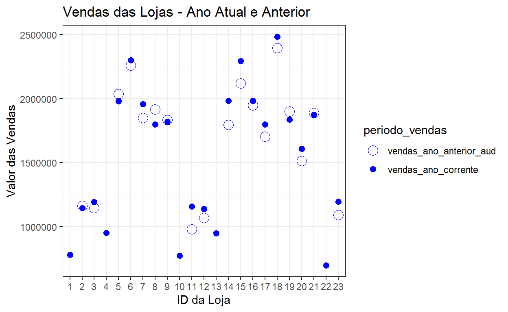
O gráfico sugere haver um agrupamento das lojas em função da ordenação por ID. É possível identificar os seguintes grupos de lojas: 1-4, 5-9, 10-13, 14-21 e 22-23.
Este aparente agrupamento das lojas pode ser resultado da localização das lojas ou algum outro fator relacionado ao ID da loja ou simplesmente um padrão espúrio que emergiu por coincidência. Alguma investigação adicional será necessária.
O gráfico anterior pode ser modificado para que revele novas informações ao menos de duas outras formas. Em vez de plotar as vendas em função dos valores ordenados do ID das lojas pode-se plotar em função da ordenação dos valores das vendas das lojas com menores vendas para as lojas com maiores vendas. Além disso, pelo fato de sabermos que as lojas que vendem combustível tendem a ter um volume de vendas maior, parece razoável distinguir as que vendem combustível das que não vendem. O gráfico apresentado no artigo é o seguinte:
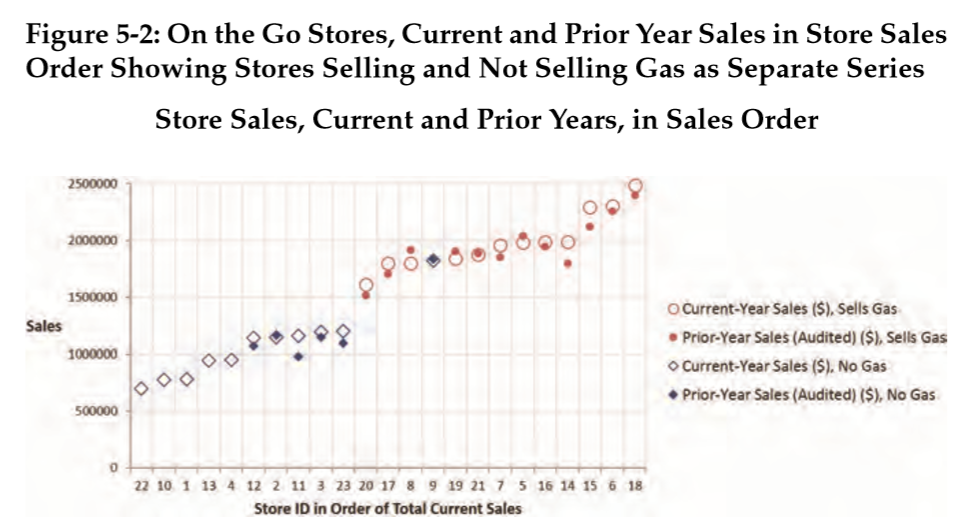
O código a seguir a mostra como incorporar as duas alterações propostas de forma a produzir um gráfico semelhante ao apresentado no artigo.
ggplot(stores_long,
aes(x=fct_reorder2(factor(store), periodo_vendas,valor_vendas, .desc = FALSE),
y=valor_vendas)) +
geom_point(aes(shape=periodo_vendas,
size=periodo_vendas),
color="blue") +
scale_shape_manual(values = c(1, 20)) +
scale_size_manual(values = c(4, 3.5)) +
theme_bw() +
xlab("ID da Loja") +
ylab("Valor das Vendas") +
ggtitle("Vendas das Lojas - Ano Atual e Anterior")+
facet_wrap(~ vende_gasolina, scales = "free_x")
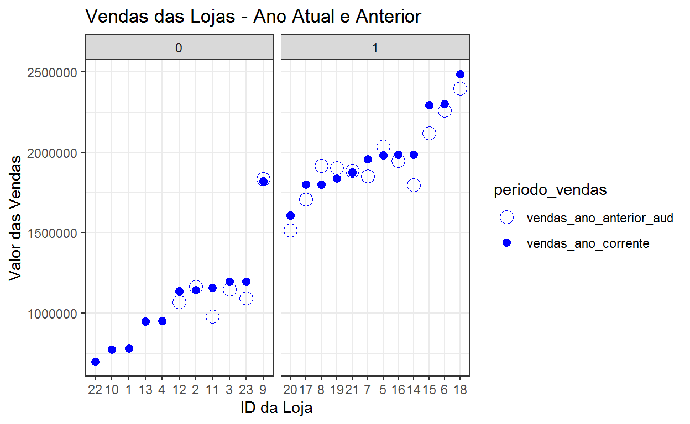
O gráfico nos mostra que as cinco lojas que abriram durante o ano não vendem combustível e estão entre as que possuem as menores vendas, conforme esperado. Também como esperado, as lojas que vendem combustível possuem um volume de vendas bem maior que as outras. Um exceção notável é a loja n. 9 que parece ter uma performance de vendas igual às lojas que vendem combustível, o que não é algo esperado.
O auditor deve conferir para ver se a loja está corretamente classificada e, se confirmada que é uma loja que não vende combustível, tentar entender as razões sua performance tão superior às demais.
Uso no contexto de testes de razoabilidade
Seguindo ainda no exemplo contido no artigo em referência, outra aplicação de visualização de dados é feita no âmbito da aplicação de um teste de razoabilidade pelo qual faz-se a avaliação das vendas em função da área das lojas (vendas por unidade de área das lojas) comparando-se os valores obtidos com um valor de referência ( $490 ) fornecido pela Associação Nacional das Lojas de Conveniência (NACS, na sigla em inglês).
O gráfico apresentado no artigo é mostrado a seguir:
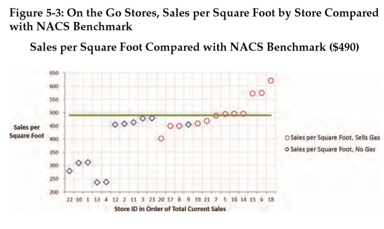
Para reproduzir o gráfico acima será necessário antes calcular o valor das vendas por unidade de área da loja. Estas duas variáveis são valor_vendas e area_deposito. A nova variável é o quociente de ambas.
Agora o gráfico acima pode ser replicado conforme mostrado a seguir:
stores_long %>%
filter(periodo_vendas == "vendas_ano_corrente") %>%
mutate(vende_gasolina = factor(vende_gasolina)) %>%
ggplot(aes(x=fct_reorder2(factor(store), periodo_vendas,valor_vendas, .desc = FALSE),
y=vendas_unid_area)) +
geom_point(aes(shape=vende_gasolina), color="blue", size=4) +
scale_shape_manual(values = c(1, 8)) +
geom_hline( yintercept = 490, color="red", size=1 ) +
theme_bw() +
xlab("ID da Loja (Ordenado por Valor de Vendas)") +
ylab("Valor das Vendas por 'Square Foot'") +
ggtitle("Vendas por Unidade de Área das Lojas \n ( Comparação com Valor de Referência )")
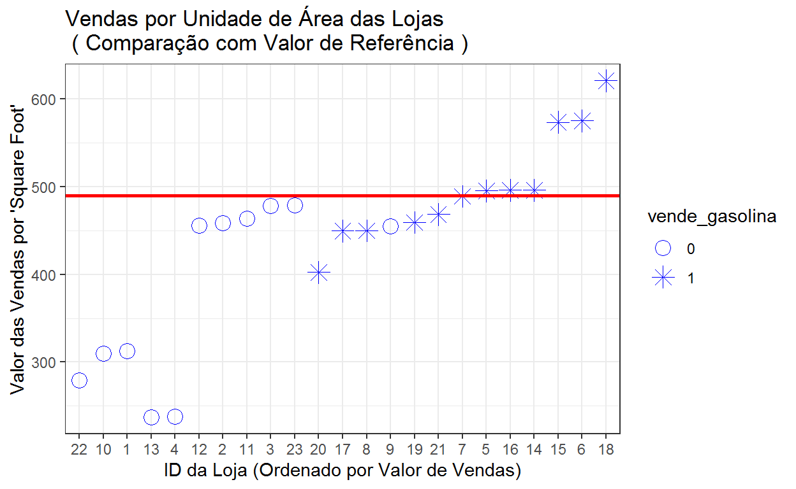
O gráfico mostra que as cinco lojas que abriram durante o ano possuem os menores valores de vendas por unidade de área. Lojas que não vendem combustível estão todas abaixo do valor de referência e três das que vendem combústível estão bem acima do valor de referência.
A figura abaixo, também constante do artigo, mostra que a rotatividade do estoque ( vendas \(\div\) estoque ) é significativamente maior para as lojas que vendem combustível (36 a 50 vezes) do que para as lojas que não vendem combustível (16 a 33 vezes).
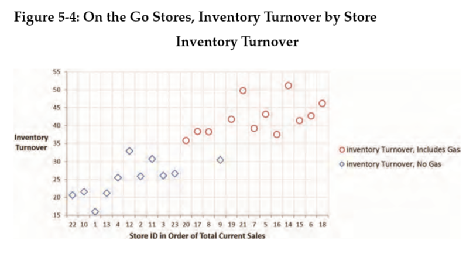
Da mesma forma como feito para o gráfico anterior, será necessário criar uma nova variável que indique a rotatividade do estoque. Isso é feito a seguir:
Agora o gráfico pode ser replicado conforme mostrado a seguir:
stores_long %>%
mutate(store = factor(store),
vende_gasolina = factor(vende_gasolina)) %>%
ggplot(aes(x = fct_reorder(store, valor_vendas, .desc = FALSE),
y = rotatividade)) +
geom_point(aes(shape = vende_gasolina), color = "blue", size = 4) +
scale_shape_manual(values = c(1, 8)) +
theme_bw() +
xlab("ID da Loja \n (Ordenado por Valor de Vendas no Ano Corrente)") +
ylab("Rotatividade do Estoque") +
ggtitle("Rotatividade do Estoque por Loja")
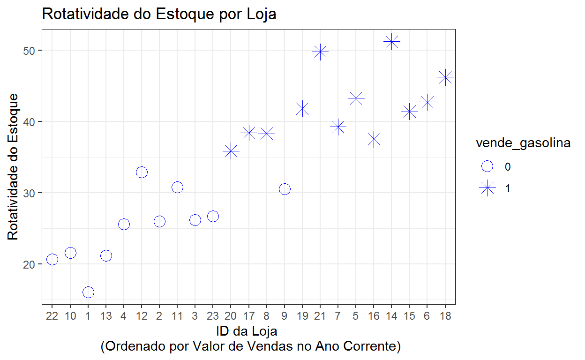
O gráfico evidencia que a rotatividade é significativamente maior para as lojas que vendem gasolina do que para as que não vendem.
E para finalizar, o gráfico a seguir, mostra um diagrama de dispersão das vendas em função do número de empregados. Quando o conjunto de dados é dividido em dois subconjuntos com lojas que vendem combustível e das que não vendem verifica-se a existência de uma forte correlação, da ordem de 80% em cada caso, e o gráfico deixa claro que as lojas que vendem combustível possuem um volume de vendas por empregado maior que as lojas que não vendem combustível.
Caso a análise fosse feita sem que os dados fossem dividos, o modelo de regressão não teria sido adequado e a correlação seria de apenas 15%. Este exemplo ilustra o seguinte ponto: os auditores devem utilizar a análise de dados para obter uma clara compreensão dos mesmos antes de tentar utilizar qualquer modelo.
O artigo apresenta o seguinte gráfico:
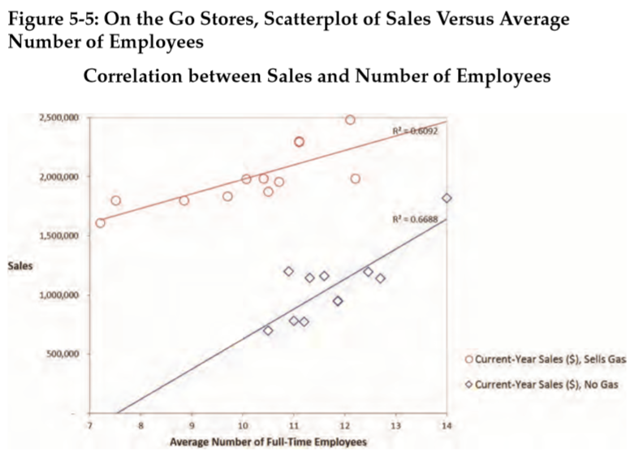
O código a seguir ilustra como obter o gráfico e modelos ajustados.
# Correlação para as lojas que não vendem combustivel
stores_long %>%
filter(vende_gasolina == 0) %>%
select(qtd_media_empregados, valor_vendas) %>%
cor()
qtd_media_empregados valor_vendas
qtd_media_empregados 1.0000000 0.8177876
valor_vendas 0.8177876 1.0000000# Correlação para as lojas que vendem combustível
stores_long %>%
filter(vende_gasolina == 1) %>%
select(qtd_media_empregados, valor_vendas) %>%
cor()
qtd_media_empregados valor_vendas
qtd_media_empregados 1.0000000 0.7805102
valor_vendas 0.7805102 1.0000000stores_long %>%
mutate( vende_gasolina = factor(vende_gasolina)) %>%
ggplot(aes(x = qtd_media_empregados, y = valor_vendas, shape = vende_gasolina)) +
geom_point( color = "blue", size = 4) +
geom_smooth(method = "lm", se=FALSE, color="red", formula = y ~ x) +
scale_shape_manual(values = c(1, 8)) +
geom_text(x = 8, y = 2250000, label = "r = 0.780", stats = "unique", color="red") +
geom_text(x = 12, y = 1500000, label = "r = 0.817", stats = "unique", color="red") +
theme_bw() +
xlab("Qtd. Média de Empregados") +
ylab("Vendas") +
ggtitle("Correlação entre Vendas e Qtd. Empregados")
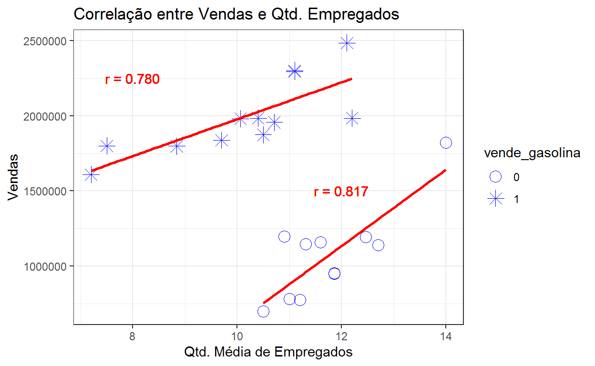
Nota: O artigo inclui no gráfico o coeficiente de determinação (\(R^2\)) do modelo de regressão ajustado. Optei por incluir o coeficiente de correlação linear entre as variáveis.
O artigo conclui esclarecendo que as conclusões e insights que o auditor pode extrair da análise realizada irá depender de questões específicas da entidade incluindo as expectativas do auditor.
As visualizações auxiliam o auditor a perceber padrões e relacionamentos e, ainda, eventuais resultados inesperados. Fica a cargo do auditor decidir, com base no conhecimento que tem da entidade, o que é relevante e o que, se houver, deverá ser objeto de análise adicional.